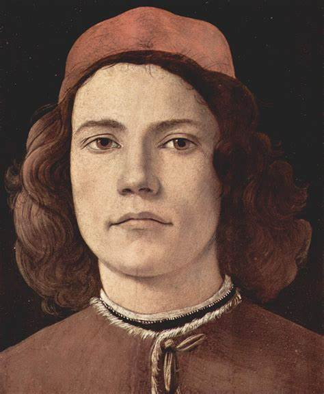

Giovanni Pico della Mirandola fue un humanista y pensador italiano del siglo XV. Nació el 24 de febrero de 1463 cerca de Ferrara, Italia. Fue el fundador de la Cábala cristiana y es conocido por ser el autor del Discurso sobre la Dignidad del Hombre. Esta obra, que escribió con 23 años, contiene 900 tesis sobre filosofía y religión, y constituye un auténtico manifiesto del Renacimiento y un texto fundamental del humanismo.
Pico della Mirandola estudió en la Universidad de Bolonia y en universidades de Italia y Francia. Fue un gran estudioso de las lenguas y aprendió griego, árabe, hebreo, caldeo, debido a su enorme interés por comprender la Cábala, el Corán, los oráculos caldeos y los diálogos de Platón en su propio idioma.

Su filosofia
La filosofía de Pico della Mirandola se basa en la idea de que la religión cristiana puede ser el puente de unión de las distintas tradiciones culturales. En sus 900 tesis, propone que la religión cristiana puede ser el puente de unión de las distintas tradiciones culturales. El filósofo pretendía que sus conclusiones fueran discutidas en Roma después de la Epifanía de 1487 a fin de promover el entendimiento entre todas las culturas.
En la introducción a las Conclusiones philosophicae, cabalisticae et theologica, describe los principios fundamentales del Renacimiento: libertad de expresión, libertad religiosa y cultural, derecho a la educación y respeto a la tolerancia.
Como impacta nuestra vida
El impacto del pensamiento de Giovanni Pico della Mirandola en la filosofía europea moderna ha sido decisivo. El príncipe filósofo italiano ofreció una nueva versión de la filosofía y la teología que revolucionó la forma en que pensamos sobre nosotros mismos y el mundo que nos rodea.
Su filosofía de la libertad y la capacidad del ser humano para elegir su propio destino influyó en la Reforma protestante y en la Ilustración. Su obra sigue siendo una fuente de inspiración para muchos pensadores y académicos en la actualidad.